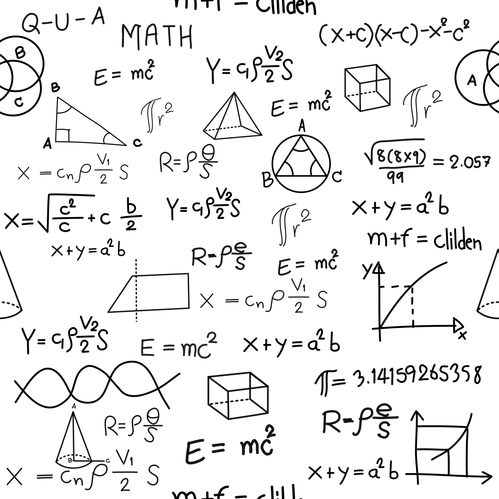

Quel est ce projet ?
Cet espace pourrait se rapprocher d’une bibliothèque de compétence informatique et scientifique. En effet, ce projet consiste et consistera à exprimer nos compétences dans le développement web par l’idée de publier nos travaux réaliser lors de nos travaux pratiques en licence de physique.
